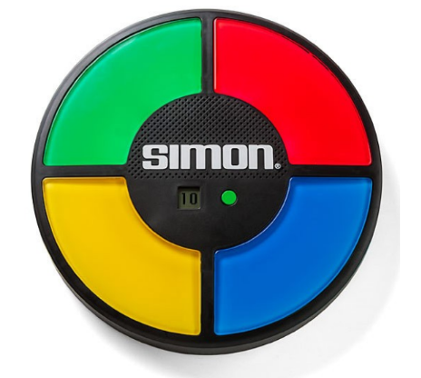
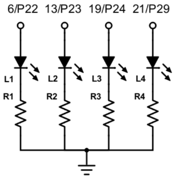
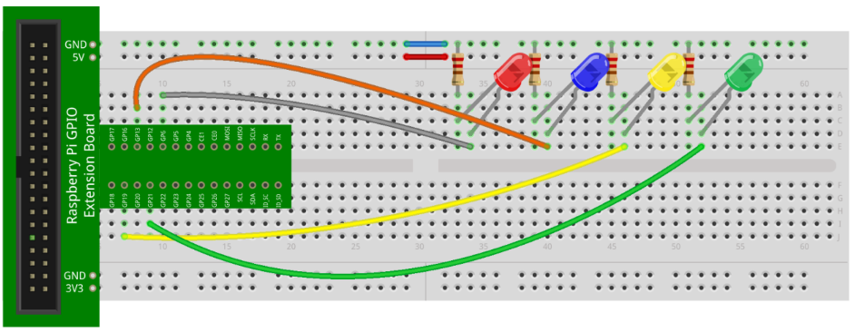
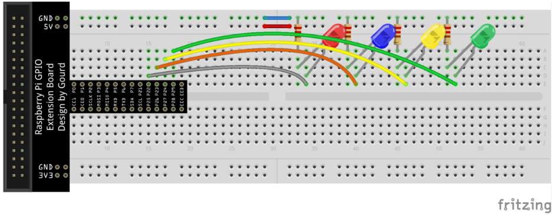
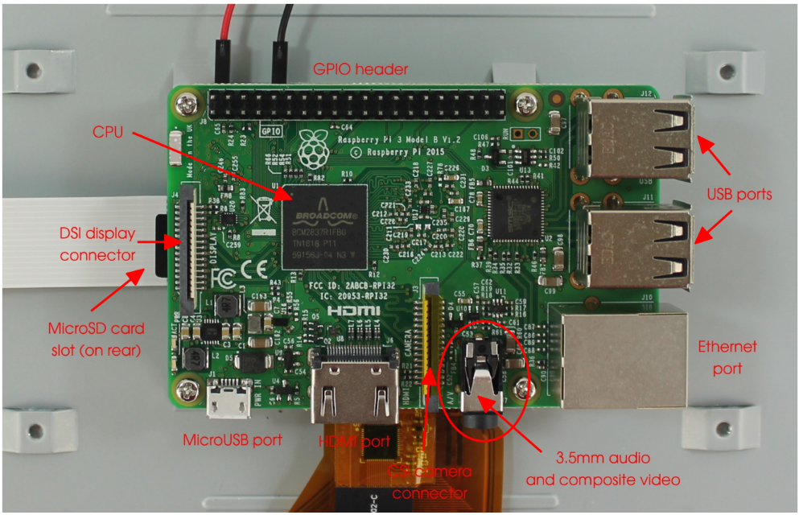
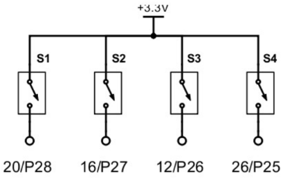
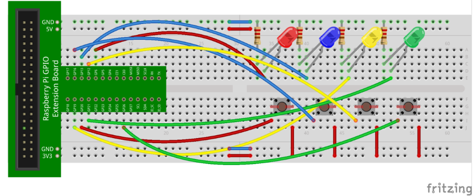
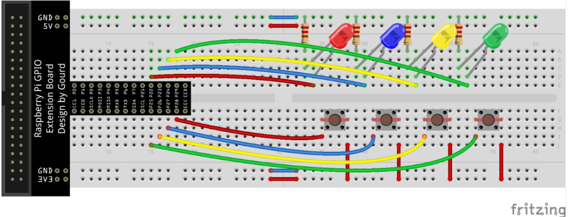

1 Raspberry Pi Activity: Simon
1.1 Introduction
In this activity, you will implement a game that is similar to the popular (well, years ago anyways) game called Simon. Simon is an electronic memory skill game. Here’s an image of the game as manufactured by Milton Bradley:

The game board is circular and has four large buttons that light up, each of a different color. Each color button has a musical note or tone associated with it. The game begins by randomly picking one (or sometimes two or even three) random colors. These randomly chosen colors are called a sequence. The game then plays the sequence by lighting up the appropriate colored buttons and playing the corresponding notes. The player then tries to replicate the sequence exactly. Any mistake, and the game ends. Each time the player successfully plays a sequence and matches the randomly selected colors, the sequence grows by an extra color.
For this activity, you will need the following items:
• Raspberry Pi B v3 with power adapter;
• LCD touchscreen;
• Keyboard and mouse;
• USB-powered speakers;
• Breadboard;
• GPIO interface board with ribbon cable; and
• LEDs, resistors, switches, and jumper wires provided in your kit.Regarding the electronic components, you will need the following:
• 1x red LED;
• 1x blue LED;
• 1x yellow LED;
• 1x green LED;
• 4x push-button switches;
• 4x 220Ω resistors; and
• 16x jumper wires.1.2 The Circuit
To begin, implement the following circuit:

Although you can wire the LEDs to different GPIO pins on the RPi, it will be easier if you follow the circuit diagram shown above because it will match the source code provided. Also, try to keep enough space for four push-button switches in between the GPIO-to-breadboard interface and the LEDs. This will make it easier to implement the other parts of this activity. Here’s one way to layout the circuit:

If you have the black GPIO interface, layout the circuit as follows instead:

For this part of the activity, you will simply turn the LEDs on, one at a time. As each LED is turned on, a corresponding note will play. You will use the Pygame library to play the notes. Pygame is a set of Python libraries that are useful for making games. For this activity, you will make use of its multimedia support (specifically, the ability to play sound files).
To play the notes, you will first need to obtain four sound files located on the class web site:
• one.wav
• two.wav
• three.wav
• four.wavIt is recommended that you create a folder for this activity and place the sound files there.
To hear the notes being played, you will need to use the USB-powered speakers. Connect the USB cable from the speakers to an open USB port on the RPi, and connect the audio cable from the speakers to the audio jack as shown below:

1.3 Turning the LEDs on and making noise!
Either using IDLE or a text editor, type the following Python code and save it to a file in the same folder as the sound files that you downloaded and saved earlier:
1 import RPi.GPIO as GPIO
2 from time import sleep
3 import pygame
4 # initialize the pygame library
5 pygame.init()
6 # set the GPIO pin numbers
7 # the LEDs (from L to R)
8 leds = [6, 13, 19, 21 ]
9 # the sounds that map to each LED (from L to R)
10 sounds = [ pygame.mixer.Sound("one.wav"),
pygame.mixer.Sound("two.wav"),
pygame.mixer.Sound("three.wav"),
pygame.mixer.Sound("four.wav") ]
11 # use the Broadcom pin mode
12 GPIO.setmode(GPIO.BCM)
13 # setup the output pins
14 GPIO.setup(leds, GPIO.OUT)
15 print("Watch the LEDs light with sound!")
16 for i in range(len(leds)):
17 # light the current LED
18 GPIO.output(leds[i], True)
19 # play its corresponding sound
20 sounds[i].play()
21 # wait a bit, then turn the LED off
22 sleep(1)
23 GPIO.output(leds[i], False)
24 sleep(0.5)
25 print("Sionara!")
26 GPIO.cleanup()Let’s explain the program. In lines 1 through 3, required libraries are imported. For this activity, we need GPIO functionality (since we’re turning on LEDs), the sleep function (to implement delays), and the Pygame library (to play the sound files).
In order to to use the modules in the Pygame library, it must first be initialized. This is done in line 5.
The next step is to setup the GPIO output pins that are wired to the LEDs in a list (in line 8). For this activity, the LEDs are wired to pins GP6= P22 (red), GP13= P23 (blue), GP19= P24 (yellow), and GP21= P29 (green). The sound files are also defined in a list and preloaded for later use (in line 10). In lines 11 through 14, the GPIO pin mode is specified, and the GPIO pins wired to the LEDs are setup as output pins.
The remainder of the source code (lines 15 through 25) turns each LED on, one at a time, plays each LED’s corresponding sound file, waits a few moments, and turns the LED off. If you need a refresher on GPIO in Python, it is suggested that you go back to Raspberry Pi Activity 2: My Binary Addiction…Reloaded. Line 26 cleans up the GPIO pins ands resets them to their defaults.
Get this part working before going on to the next part of the activity. Make sure that you see the LEDs turning on and off and hear the notes playing as each LED is briefly turned on. If the speakers aren’t working, you can try the following:
- Make sure that both the speaker’s USB and audio cables are plugged in.
- Make sure that the sound files are in the same folder as your .py source file.
- Make sure that the sound files are spelled correctly (as they are named in the folder) in your source code. Remember that filenames are case sensitive!
- Make sure that the audio configuration on the RPi is set to output to the analog 3.5mm (headphone) jack. To do this, right-click on the speaker icon at the upper right of the desktop and select Analog.
- Make sure that the volume wheel on the back of one of the speakers is turned to the left (not quite all the way) and that the volume on the RPi is close (but not all the way) to its maximum (click on the speaker icon to set the volume on the RPi).
- If you still have problems, open up a terminal (by clicking on the monitor icon at the upper left of the desktop) and type
amixer set PCM -- 100%. - If you can hear the notes but they seem broken (e.g., with pops and clicks), you may need to turn the volume down on the speakers. Do this by sliding the volume wheel on the back of one of the speakers to the right a little until the notes are clean. Another option is to reduce the volume on the RPi by modifying the percentage value in the following terminal command:
amixer set PCM – 100%. Try changing it to 85%, 75%, and so on, until the notes are clean.
1.4 Adding switches
Extend your circuit to include four push-button switches. For this part of the activity, you will modify the previous circuit so that four push-button switches control the four LEDs. Pushing on the switches will turn on the appropriate LEDs and play the corresponding notes.
Add four switches to your circuit as show below:

Here’s one way to layout this circuit:

If you have the black GPIO interface, layout the circuit as follows instead:

Make sure that the switches are wired to +3.3V on one side and to an appropriate GPIO pin on the other side (GP26=P25, GP12=P26, GP16=P27, GP20= P28 in the figures above). The input pins will be pulled down (i.e., 0V) by default, and pushing on the switches will drive the input pins high. The goal will be to detect when this occurs so that the appropriate LED can be turned on.
You will now create a new Python program. Make sure that it is also saved in the same folder as the sound files that were downloaded earlier. In IDLE or a text editor, type in the following new program:
1 import RPi.GPIO as GPIO
2 from time import sleep
3 import pygame
4 # initialize the pygame library
5 pygame.init()
6 # set the GPIO pin numbers
7 # the switches (from L to R)
8 switches = [ 20, 16, 12, 26 ]
9 # the LEDs (from L to R)
10 leds = [6, 13, 19, 21 ]
11 # the sounds that map to each LED (from L to R)
12 sounds = [ pygame.mixer.Sound("one.wav"),
pygame.mixer.Sound("two.wav"),
pygame.mixer.Sound("three.wav"),
pygame.mixer.Sound("four.wav") ]
13 # use the Broadcom pin mode
14 GPIO.setmode(GPIO.BCM)
15 # setup the input and output pins
16 GPIO.setup(switches, GPIO.IN, pull_up_down=GPIO.PUD_DOWN)
17 GPIO.setup(leds, GPIO.OUT)
18 print("Press the switches or Ctrl+C to exit...")
19 # we'll discuss this later, but this allows us to detect
20 # when Ctrl+C is pressed so that we can reset the GPIO pins
21 try:
22 # keep going until the user presses Ctrl+C
23 while (True):
24 # initially note that no switch is pressed
25 # this will help with switch debouncing
26 pressed = False
27 # so long as no switch is currently pressed...
28 while (not pressed):
29 # ...we can check the status of each switch
30 for i in range(len(switches)):
31 # if one switch is pressed
32 while (GPIO.input(switches[i]) == True):
33 # note its index
34 val = i
35 # note that a switch has now been pressed
36 pressed = True
37 # light the matching LED
38 GPIO.output(leds[val], True)
39 # play its corresponding sound
40 sounds[val].play()
41 # wait and turn the LED off again
42 sleep(1)
43 GPIO.output(leds[val], False)
44 sleep(0.25)
45 # detect Ctrl+C
46 except KeyboardInterrupt:
47 # reset the GPIO pins
48 GPIO.cleanup()
49 print("\nSionara!")You should notice that some of this new program is similar to the previous one. The first difference is that a new list is defined that stores the GPIO pins that are wired to the push-button switches (in line 8). Make sure that the specified GPIO pins match the connections on your breadboard.
Since we now have input pins, they need to be defined as such. This is done in line 16. Note that the input pins are pulled down by default.
Note the try-except construct (lines 21 and 46). Although you should have seen this before, it hasn’t yet been thoroughly explained. Essentially, a try-except construct encapsulates any part of a Python program that could potentially experience abnormal program behavior. In this case, the goal is to detect when a user presses Ctrl+C. If this key combination is detected, we wish to reset the GPIO pins (thereby resetting them to their defaults), and exit the program (lines 48 through 49).
The goal of the program is to continually wait for a switch to be pressed. When one is pressed, the program tries to detect which one it is, and light the appropriate LED. After a brief moment, the program should wait for another switch to be pressed. The only way to end the program is to press Ctrl+C. To check for switch presses indefinitely, the program uses a while loop. Note the condition of this while loop in line 23. Since the condition is always true, the while loop executes forever! But this is OK, since we are allowing Ctrl+C to abort and exit the program.
When reading switch presses, we must worry about an issue called debouncing. Switch debouncing prevents a single press of a push-button switch from appearing like multiple presses. This is something that we generally have to live with when using switches in digital circuits. The tactic in this program is to utilize a Boolean variable called pressed that detects when any one of the switches is pressed. Initially, it is set to false (i.e., no switch is pressed) in line 26. The while loop beginning at line 28 is then entered. When any one of the switches is pressed, the variable is toggled to true (line 36). This breaks control out of the while loop, allowing the appropriate LED to be turned on and the corresponding note to be played (lines 37 through 44). Since the variable is toggled to true, then no other switch press can be detected until it is reset to false.
Detecting which switch is pressed (if any), is done in the for loop beginning at line 30. The program checks the state of each switch, one by one (line 32). While any switch is pressed (i.e., its wired input pin is high), its index is noted (line 34). A switch’s index corresponds to the index of the LED in the list of LEDs that it controls (and the sound file that should be played). Once a switch press has been detected, the variable pressed is set to true in line 36 (which breaks out of the while loop beginning at line 28).
Again, once a switch has been pressed, the appropriate LED is turned on, and the corresponding sound file is played (lines 37 through 40). After a brief moment, the LED is turned back off (lines 41 through 44), and the outer while loop beginning at line 23 begins again.
Get this part working before going on to the next part of the activity. Make sure that you see the LEDs turning on and off as you press the switches. Make sure that you hear the notes playing as each LED is briefly turned on.
1.5 Simon
The parts of the activity that you have already implemented provide almost all that is needed to lay the base for the game. The only thing left to add is a way to generate a random sequence of colors, allow the player to push buttons that correspond the to sequence, check if the player’s sequence matches the one in the game, and either grow the sequence or end the game!
First, here’s the code:
1 import RPi.GPIO as GPIO
2 from time import sleep
3 from random import randint
4 import pygame
5 # set to True to enable debugging output
6 DEBUG = False
7 # initialize the pygame library
8 pygame.init()
9 # set the GPIO pin numbers
10 # the switches (from L to R)
11 switches = [ 20, 16, 12, 26 ]
12 # the LEDs (from L to R)
13 leds = [6, 13, 19, 21 ]
14 # the sounds that map to each LED (from L to R)
15 sounds = [ pygame.mixer.Sound("one.wav"),
pygame.mixer.Sound("two.wav"),
pygame.mixer.Sound("three.wav"),
pygame.mixer.Sound("four.wav") ]
16 # use the Broadcom pin mode
17 GPIO.setmode(GPIO.BCM)
18 # setup the input and output pins
19 GPIO.setup(switches, GPIO.IN, pull_up_down=GPIO.PUD_DOWN)
20 GPIO.setup(leds, GPIO.OUT)
21 # this function turns the LEDs on
22 def all_on():
23 for i in leds:
24 GPIO.output(leds, True)
25 # this function turns the LEDs off
26 def all_off():
27 for i in leds:
28 GPIO.output(leds, False)
29 # this functions flashes the LEDs a few times when the player loses the game
30 def lose():
31 for i in range(0, 4):
32 all_on()
33 sleep(0.5)
34 all_off()
35 sleep(0.5)
36 # the main part of the program
37 # initialize the Simon sequence
38 # each item in the sequence represents an LED (or switch), indexed at 0 through 3
39 seq = []
40 # randomly add the first two items to the sequence
41 seq.append(randint(0, 3))
42 seq.append(randint(0, 3))
43 print("Welcome to Simon!")
44 print("Try to play the sequence back by pressing the switches.")
45 print("Press Ctrl+C to exit...")
46 # we'll discuss this later, but this allows us to detect
47 # when Ctrl+C is pressed so that we can reset the GPIO pins
48 try:
49 # keep going until the user presses Ctrl+C
50 while (True):
51 # randomly add one more item to the sequence
52 seq.append(randint(0, 3))
53 if (DEBUG):
54 # display the sequence to the console
55 if (len(seq) > 3):
56 print()
57 print("seq={}".format(seq))
58 # display the sequence using the LEDs
59 for s in seq:
60 # turn the appropriate LED on
61 GPIO.output(leds[s], True)
62 # play its corresponding sound
63 sounds[s].play()
64 # wait and turn the LED off again
65 sleep(1)
66 GPIO.output(leds[s], False)
67 sleep(0.5)
68 # wait for player input (via the switches)
69 # initialize the count of switches pressed to 0
70 switch_count = 0
71 # keep accepting player input until the number of items in the sequence is reached
72 while (switch_count < len(seq)):
73 # initially note that no switch is pressed
74 # this will help with switch debouncing
75 pressed = False
76 # so long as no switch is currently pressed...
77 while (not pressed):
78 # ...we can check the status of each switch
79 for i in range(len(switches)):
80 # if one switch is pressed
81 while (GPIO.input(switches[i]) == True):
82 # note its index
83 val = i
84 # note that a switch has now been pressed
85 # so that we don't detect any more switch presses
86 pressed = True
87 if (DEBUG):
88 # display the index of the switch pressed
89 print(val)
90 # light the matching LED
91 GPIO.output(leds[val], True)
92 # play its corresponding sound
93 sounds[val].play()
94 # wait and turn the LED off again
95 sleep(1)
96 GPIO.output(leds[val], False)
97 sleep(0.25)
98 # check to see if this LED is correct in the sequence
99 if (val != seq[switch_count]):
100 # player is incorrect; invoke the lose function
101 lose()
102 # reset the GPIO pins
103 GPIO.cleanup()
104 # exit the game
105 exit(0)
106 # if the player has this item in the sequence correct, increment the count
107 switch_count += 1
108 # detect Ctrl+C
109 except KeyboardInterrupt:
110 # reset the GPIO pins
111 GPIO.cleanup()To support randomly generating the sequence, the random library is imported in line 3. Also, it is often useful to display debugging information while developing applications. In the case of Simon, it is useful to show the randomly generated sequence, and the player’s submitted sequence. This can help during testing. The debug variable is set in line 6. When it is set to false, no debugging information is shown.
Lines 7 through 20 are the same as the last part of this activity. Lines 21 through 35 define three new functions. The first simply turns all of the LEDs on. The second turns all of the LEDs off. The third is invoked when the player loses the game. This function blinks all of the LEDs a few times before the game ends.
Lines 39 through 42 setup the empty sequence and add two random colors to the sequence. After some short introduction text, the game officially begins with the while loop beginning at line 50.
Each time the while loop iterates, a new random color is added to the sequence (line 52). If debugging is enabled, the sequence is then displayed to the console (lines 55 through 57). The game then displays the sequence, turning on the appropriate LEDs and playing the corresponding notes, one by one (lines 59 through 67).
Since we now want to detect the pressing of multiple switches sequentially (i.e., we need to detect the player’s submission for the entire sequence), a counter is initialized (line 70) and is increased each time the player presses a switch (later in line 107). The program accepts as many switch presses as there are colors in the sequence (line 72). The detection of which switch is pressed is the same as in the previous part of the activity (lines 75 through 86). If debugging is enabled, the index of the pressed switch is displayed to the console (line 89).
Lines 90 through 97 turn the LED on that corresponds to the player’s switch press, plays the corresponding note, waits a brief moment, then turns the LED off. Line 99 then checks to make sure that the player’s switch press is indeed the right one in the sequence. If not, the player loses and the game ends (lines 101 through 105).
2 Homework: Simon
For the homework portion of this activity, you may have the option to work in groups (pending prof approval). It is suggested that groups contain at least one confident Python coder.
The first part of this activity is to implement the Simon program in this activity. Please work to understand the algorithm and source code instead of merely typing it in (or, worse, using a copy/paste process). Once your Simon game is working properly, you can move on the the second part of this activity.
For the second part of this activity, you must implement several improvements:
A scoring mechanism. When the player makes a mistake and the game ends, output a message similar to, “You made it to a sequence of 9!” Remember that failing at the start should output something like, “You made it to a sequence of 0!” or, “You didn’t even make it to a sequence!”
Over time, increase the speed of the playing sequence. As the player is more and more successful, increase the speed of the sequence as it is played back to the player. The time spent playing each note in a sequence is currently 1s. Furthermore, the delay in between playing the notes is currently 0.5s. Modify this as follows:
- Once the sequence gets to five notes, the time spent playing each each note should be decreased to 0.9s; the delay in between playing the notes should be decreased to 0.4s.
- Once the sequence gets to seven notes, the time spent playing each each note should be decreased to 0.8s; the delay in between playing the notes should be decreased to 0.3s.
- Once the sequence gets to ten notes, the time spent playing each each note should be decreased to 0.7s; the delay in between playing the notes should be decreased to 0.25s.
- Once the sequence gets to thirteen notes, the time spent playing each each note should be decreased to 0.6s; the delay in between playing the notes should be decreased to 0.15s.
Note that this should not affect the normal play and delay times when the player presses the switches!
Over time, no longer use the LEDs when playing the sequence. Once the sequence gets to fifteen notes, stop turning LEDs on/off. That is, the player is evidently so good at this point that the sequence should only be played audibly. The play and delay times should be as described in (2) above (i.e., the same times as a sequence of thirteen notes).
Note that this should not affect the normal behavior of the LEDs when the player presses the switches!
You are to submit your Python source code only (as a .py file) through the upload facility on the web site.